| Name | {{STUDENT_NAME}} |
| Roll number | 23L-0871 |
| GitHub repository | https://github.com/Umer529/23L-0871_A2_Ops |
| DagsHub project (code, DVC data, MLflow) | https://dagshub.com/Umer529/23L-0871_A2_Ops |
| Live model API (Vercel) | https://23-l-0871-a2-ops.vercel.app (/health, /predict) |
| Web app | Flask on http://localhost:5000 via docker compose up, calling the API above |
| Commit hash of graded version | {{COMMIT}} |
| Date | {{DATE}} |
I used Claude Code (Anthropic's Claude, an AI coding assistant) throughout this assignment. It was used to: plan the work against the task list; write and debug most of the Python code (audit, EDA, tf.data pipeline, models, training/evaluation scripts, MLflow instrumentation, Flask app, Dockerfile/Compose, CI workflow, model API, deployment script); run the training experiments, tests and Docker checks on my machine; and draft the explanatory text of this report from the results. I ran and checked the outputs, made the account-level decisions (DagsHub, Vercel, tokens), took the screenshots that need my own logins, and reviewed the report. Official documentation used: TensorFlow/Keras (tf.data, keras.applications, callbacks, TFLite converter), MLflow (tracking, autolog, model registry), DVC and DagsHub docs, Flask/Werkzeug, Docker and Docker Compose, GitHub Actions, Vercel Python runtime, and Google's LiteRT docs.
visionguard and aliased champion. The champion is exported once into a plain
.keras file (for the Flask container) and a .tflite file (for the serverless API). The Flask app runs in
Docker Compose next to PostgreSQL, records every prediction, and either runs the Keras model in-process
(INFERENCE_MODE=local) or calls the model API on Vercel (INFERENCE_MODE=remote). A single file,
src/preprocess.py, does the image preprocessing in training, in the Flask app and in the API.What and why. I created an isolated virtual environment (python -m venv venv, Python 3.12.10) so the project's
library versions cannot clash with other projects, and pinned the main packages in requirements.txt. TensorFlow 2.17.1
was installed; the check below shows no GPU is visible to TensorFlow (the laptop has no CUDA GPU and TF 2.17 on native Windows
is CPU-only), so all training ran on the CPU. This shaped later decisions: 224×224 inputs, a light backbone (MobileNetV2),
caching decoded images, and capped epochs.
Figure 1.1 – Terminal output: exact library versions and the GPU check (prompt shows user, machine, date and project).
What. src/audit.py walks data/raw/<class>/* and builds one row per file with: class (the folder
name), file size, width, height, colour mode, format and a SHA-256 hash of the bytes. The full table is saved to
reports/audit.csv (975 rows).
How. Each file is opened with Pillow twice: verify() checks the file structure, then a second open with
load() forces a full decode (verify alone leaves the image unusable and misses some truncated files). Any exception marks
the file unreadable. Exact duplicates are files with the same SHA-256; duplicated(keep="first") marks the extra
copies, and a second check flags hashes that appear in both classes (that would be label noise).
Figure 1.2 – Audit output: counts per class, min/median/max of width, height and file size, colour modes, formats, corrupt files and duplicates.
| Finding | Result | Consequence |
|---|---|---|
| Images per class | AI 539, Real 436 (55% / 45%) | Mild imbalance → stratified splits; report precision/recall/AUC, not only accuracy |
| Corrupt / unreadable | 0 | Nothing to drop |
| Exact duplicates | 1 extra copy; 0 hashes shared across classes | Copy removed before splitting so it cannot sit in train and test at once |
| Colour modes | RGB, RGBA, P (palette), L (greyscale) | Everything is converted to 3-channel RGB in preprocessing |
| Formats | JPEG and PNG only | The web app accepts exactly these two |
| Sizes | Widths 183–8495 px, file sizes 11 KB–9.9 MB | Must resize to one size; large files make decoding the bottleneck → cache |
After removing the duplicate, src/split.py makes a stratified 70/15/15 split with seed 42:
train 681 (AI 376 / real 305), val 146 (81 / 65), test 147 (81 / 66), saved as
data/splits/{train,val,test}.csv (label 1 = AI-generated, 0 = real).
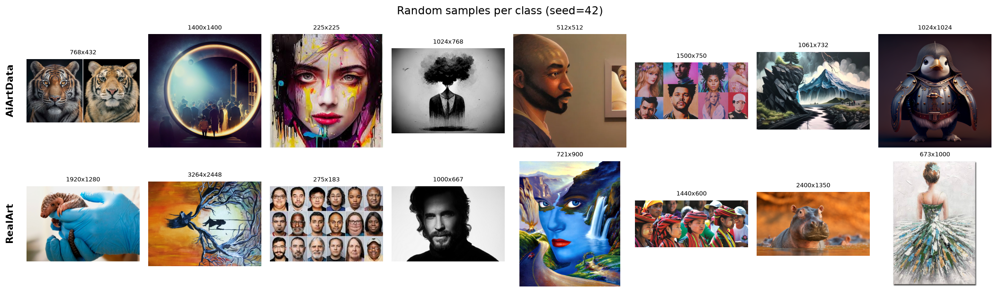
Interpretation. AI images tend to be stylised: smooth, glossy surfaces, dramatic lighting and centred subjects. The "real" class is not only photographs: it contains paintings and digital art, so the task is really "generated vs human-made", which is harder than photo vs AI. Some images in both classes are collages or grids of faces, which adds label noise.
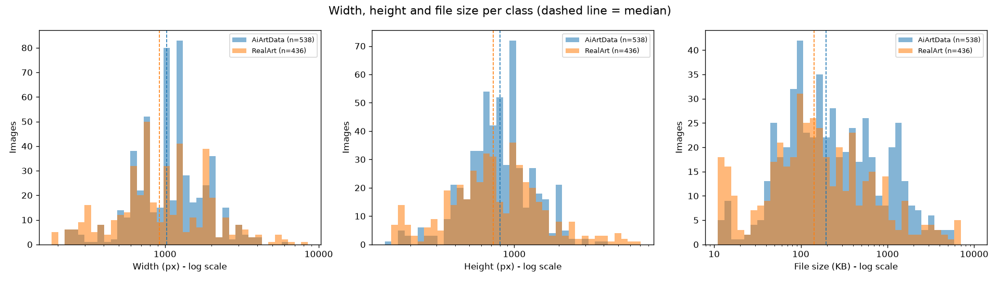
Interpretation. AI images pile up at typical generator sizes (sharp spikes at 512, 768, 1024 px), while real images spread widely, including tiny thumbnails (<300 px, <20 KB) and very large camera files. Because size and aspect ratio differ by class, a model could "cheat" by learning them; resizing everything to one square size after a centre crop removes both cues (see 2.1). File sizes overlap heavily, so file size alone would not separate the classes.
Toy part. In a new empty folder I initialised Git and DVC, tracked a small CSV with dvc add, changed it and
committed both versions, went back to the old version (git checkout HEAD~1 -- data.csv.dvc + dvc checkout),
configured a DagsHub remote, ran dvc push, deleted the local data and cache, and restored it with dvc pull.
dvc add + first commit; v2 commit; checkout back to
v1 (type data.csv shows old content); dvc push to DagsHub; delete + dvc pull restoring the file;
the toy repo on DagsHub.Apply part. In the project I ran dvc init, dvc add data/raw, committed the pointer file, added the
DagsHub remote (https://dagshub.com/Umer529/23L-0871_A2_Ops.dvc) with the credentials stored using --local
(written to the git-ignored .dvc/config.local), and pushed. dvc status -c confirms cache and remote are in sync.
Figure 1.5 – The pointer file data/raw.dvc, the remote, the sync status and proof that the dataset, the
DVC credentials and .env are ignored by Git.
data/raw with the DVC badge and the initial commits.What the pointer file holds. data/raw.dvc is a few lines of YAML: the MD5 of the directory listing
(8f23d6dc….dir), total size (503,783,378 bytes), number of files (975) and the path. Git versions this tiny file;
the actual images live in the DVC cache and remote, addressed by those hashes. Checking out an old commit gives the old pointer, and
dvc checkout materialises the matching data.
Why large data does not belong in Git. Git stores every version of every file forever in its history and every clone downloads all of it; 500 MB of images (and each new version) would make clones and pushes slow, hit GitHub's size limits, and binary diffs are useless. DVC keeps Git small and fast while still tying each commit to an exact data version.
Stages (src/data.py + src/preprocess.py):
tf.data.Dataset.from_tensor_slices((paths, labels)) from the CSV, so every run uses the identical split.prefetch(AUTOTUNE) prepares the next batch while the model trains on the current one.Image size and aspect ratio. 224×224 is the resolution MobileNetV2 and EfficientNetB0 were pretrained at, so the
pretrained filters see objects at the scale they learned. Aspect ratio is not preserved by stretching: I take the
centre square and resize it, so nothing is distorted, the price being that the left/right (or top/bottom) edges of
wide/tall images are cut off. Letter-boxing was rejected because padding bars would appear mostly on real images (their aspect ratios
vary more) and become a shortcut feature. Augmentation is deliberately mild: blur, noise or strong colour jitter would erase the
fine texture artefacts that distinguish generated images. Model-specific scaling (/255 for the CNN, to [-1, 1] for MobileNetV2) is a
layer inside each model, so serving code just feeds what decode_and_resize() returns.
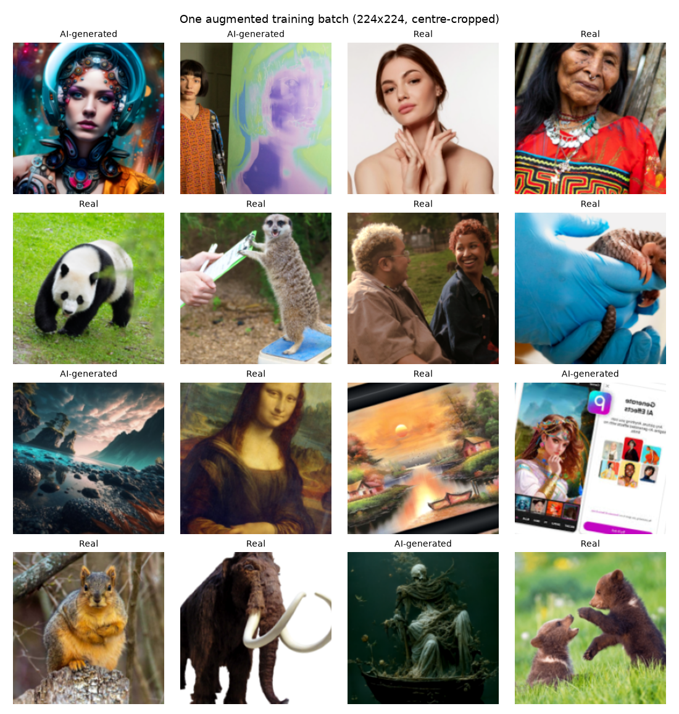
| Layer | Type | Output shape | Params | Why it is there |
|---|---|---|---|---|
| rescale_0_1 | Rescaling | 224×224×3 | 0 | [0,255] → [0,1] so gradients are well scaled |
| block1_conv / bn / relu / pool | Conv2D 3×3, BN, ReLU, MaxPool | 112×112×32 | 864 + 128 | Low-level edges and textures; BN stabilises training, pooling halves resolution |
| block2_* | same, 64 filters | 56×56×64 | 18,432 + 256 | Combinations of textures; more filters as resolution drops |
| block3_* | same, 128 filters | 28×28×128 | 73,728 + 512 | Larger patterns / parts |
| block4_* | same, 128 filters | 14×14×128 | 147,456 + 512 | Most abstract features |
| gap | GlobalAveragePooling2D | 128 | 0 | One value per feature map; far fewer params than Flatten, less overfitting |
| dropout | Dropout(0.4) | 128 | 0 | Regularisation for a 681-image training set |
| prob_ai | Dense(1, sigmoid) | 1 | 129 | Probability that the image is AI-generated |
| Total | 242,017 | (240,609 trainable; BN moving statistics are non-trainable) | ||
Table 2.1 – Output shape and parameter count per layer (reports/cnn_224/layer_table.csv; full Keras summary in model_summary.txt).
Convolutions use use_bias=False because the following BatchNorm adds its own shift.
Loss, optimiser, metrics. Binary cross-entropy is the matching loss for a single sigmoid output (it is the negative log-likelihood of a Bernoulli label, so it rewards calibrated probabilities, which we need for thresholding). Adam (lr 1e-3) adapts the step size per parameter and works well without tuning. Metrics: accuracy for readability, plus AUC, precision and recall because the classes are imbalanced and the two error types have different costs (2.5).
model.summary() printed by python src/train.py --model cnn
(the same table is saved in reports/cnn_224/model_summary.txt).What. keras.applications.MobileNetV2(include_top=False, weights="imagenet") without its 1000-class classifier,
followed by my head: GlobalAveragePooling → Dropout(0.3) → Dense(1, sigmoid). I chose MobileNetV2 because it is the lightest
of the three options (2.26 M parameters, 8.9 MB as TFLite) and trains reasonably on a CPU.
block_16_expand, block_16_depthwise,
block_16_project and Conv_1 become trainable (880,321 trainable parameters). BatchNorm layers stay frozen and
the backbone is called with training=False, so the small dataset cannot overwrite the pretrained running statistics.
The tiny learning rate nudges the pretrained filters instead of destroying them.Preprocessing. MobileNetV2 was pretrained on pixels scaled to [-1, 1] (mobilenet_v2.preprocess_input:
x/127.5 - 1). Feeding it [0, 1] or [0, 255] would shift every activation away from what the filters were trained on and
waste the pretraining. I implement the exact same maths as a Rescaling(1/127.5, offset=-1) layer inside the model, so
the saved model carries its own preprocessing. (EfficientNetB0, used in run E6, normalises internally and expects raw [0, 255].)
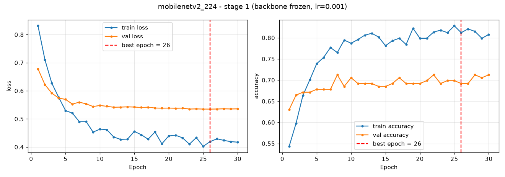
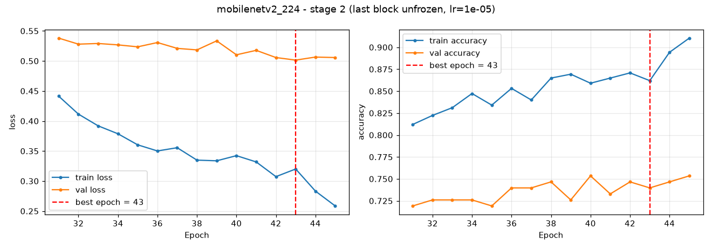
Stage 1 plateaus at about 0.70 validation accuracy; unfreezing the last block lifts it to about 0.74–0.75 and lowers validation
loss from 0.53 to 0.50. The full lists of trainable layers per stage are in reports/mobilenetv2_224/trainable_layers.txt.
The tuned champion (Task 3) unfreezes the last 50 layers (17 weighted layers, blocks 11–16, 1,835,713 trainable parameters).
keras.utils.set_random_seed(42) seeds Python, NumPy and TensorFlow in one call; the split, shuffling and augmentation also
use seed 42. Callbacks: EarlyStopping on val_loss (patience 5, restoring best weights), ModelCheckpoint saving only when
val_loss improves, and ReduceLROnPlateau (halve the lr after 2 flat epochs). For stage 2 the checkpoint is given stage 1's best
val_loss as its starting threshold, so a worse stage-2 epoch can never overwrite the better stage-1 model.
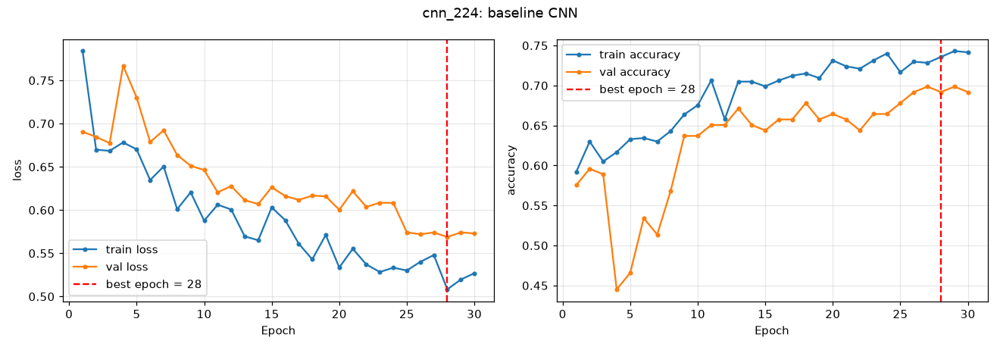
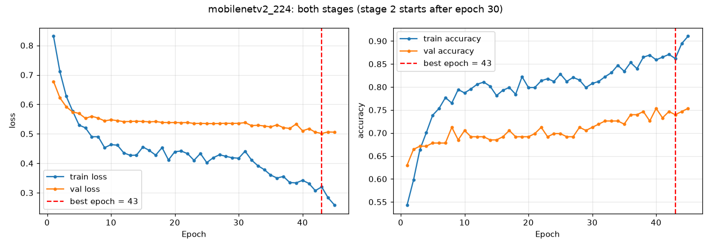
initial_value_threshold. A first run also crashed because I passed metrics positionally to compile()
(Keras read them as loss_weights).Which error is worse? For VisionGuard, calling a real photo fake (false positive) is worse. A false accusation damages a real photographer or person, and users stop trusting a tool that cries "fake" at genuine pictures; missing some AI images is a weaker failure because the tool is only one signal among many. I therefore pick the threshold on the validation set only as the one that catches the most AI images while keeping the validation false-positive rate ≤ 10%, then evaluate the test set once.
| Model (val threshold candidates) | thr | val FPR | val TPR | val F1 |
|---|---|---|---|---|
| CNN – default 0.5 | 0.50 | 0.492 | 0.840 | 0.751 |
| CNN – Youden J | 0.60 | 0.338 | 0.741 | 0.736 |
| CNN – chosen (FPR ≤ 10%) | 0.82 | 0.092 | 0.272 | 0.404 |
| MobileNetV2 – default 0.5 | 0.50 | 0.323 | 0.790 | 0.771 |
| MobileNetV2 – Youden J | 0.71 | 0.138 | 0.679 | 0.759 |
| MobileNetV2 – chosen (FPR ≤ 10%) | 0.79 | 0.092 | 0.543 | 0.672 |
Table 2.2 – Threshold choice on validation data. The default 0.5 would wrongly flag a third (MobileNetV2) to half (CNN) of real images.
| Test set (evaluated once) | Threshold | Accuracy | Precision | Recall | F1 | ROC-AUC | Real called AI |
|---|---|---|---|---|---|---|---|
| Baseline CNN | 0.82 | 0.565 | 0.774 | 0.296 | 0.429 | 0.711 | 10.6% |
| MobileNetV2 (transfer) | 0.79 | 0.714 | 0.933 | 0.519 | 0.667 | 0.840 | 4.5% |
Table 2.3 – Test metrics for both models.
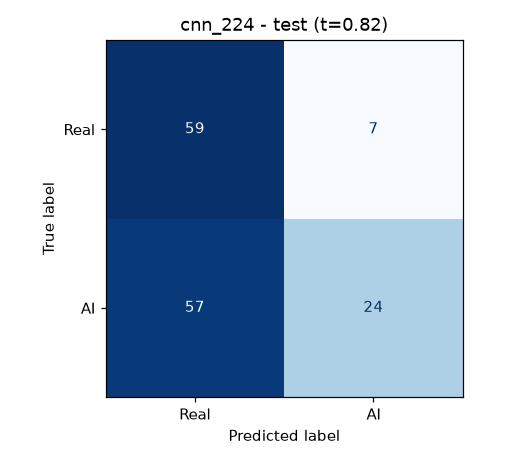
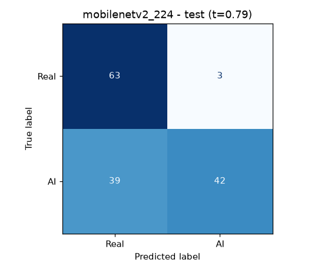
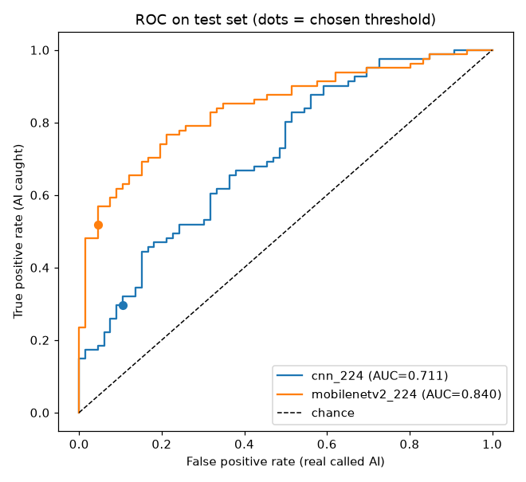
Transfer learning wins on every metric: ImageNet features capture texture statistics that a CNN trained from scratch on 681 images cannot learn. The cost of the strict threshold is visible: precision is high (93% of "AI" verdicts are right) but recall is about 52%, which the web app states honestly in its caveat.
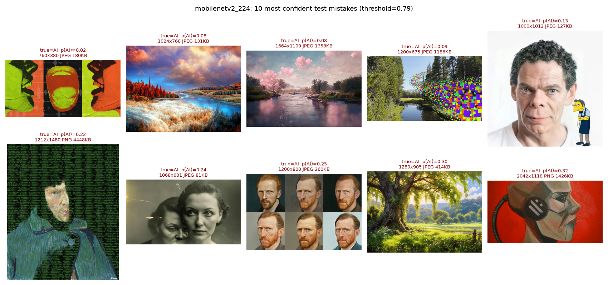
| # | Image | p(AI) | Hypothesis |
|---|---|---|---|
| 1 | Pop-art faces, 760×380 | 0.02 | Flat graphic style with hard colour blocks looks like human illustration; wide aspect ratio means the centre crop loses most of it |
| 2 | Autumn landscape | 0.08 | Photoreal landscape with no visible artefacts; saturated colours resemble edited real photos |
| 3 | Pink river scene (Midjourney) | 0.08 | Soft, painterly landscape; training AI images are mostly portraits/fantasy, few landscapes |
| 4 | Forest with pixel glitch | 0.09 | Real-looking photo with a pasted pixel-art overlay; the AI part is a small region |
| 5 | Face + cartoon character | 0.13 | Realistic portrait on white background = typical stock photo; cartoon sits at the cropped edge |
| 6 | Text/matrix painting screenshot | 0.22 | Screenshot (PNG) of a painting style; brush texture and overlaid text look human-made |
| 7 | Vintage two-women portrait | 0.24 | Black-and-white "old photograph" style with grain and blur hides generator texture |
| 8 | Grid of Van Gogh portraits | 0.25 | Painting style imitating a real artist; the "real" class contains many paintings |
| 9 | Sunny tree landscape | 0.30 | Clean, plausible scene; generator artefacts are too fine to survive resizing to 224 px |
| 10 | Robot head painting | 0.32 | Visible brush strokes and canvas texture read as a human painting |
Pattern: the model confuses style with origin. AI images imitating photography, old photos or paintings are missed; landscapes are under-represented among AI training images. More diverse AI landscapes and higher-resolution crops would help most.
Toy part (labs/keras_tuner_toy.py): RandomSearch, 8 trials, 3 epochs each, on a 20,000-image Fashion-MNIST subset,
searching hidden units (32–256, step 32) and learning rate {1e-2, 1e-3, 1e-4}.
| Trial | Units | Learning rate | Val accuracy |
|---|---|---|---|
| 5 | 96 | 0.001 | 0.825 |
| 3 | 160 | 0.01 | 0.821 |
| 6 | 128 | 0.001 | 0.817 |
| 0 | 192 | 0.01 | 0.816 |
| 2 | 256 | 0.001 | 0.814 |
| 1 | 128 | 0.01 | 0.810 |
| 7 | 32 | 0.01 | 0.798 |
| 4 | 256 | 0.01 | 0.790 |
Table 2.4 – Toy results. Best settings read with tuner.get_best_hyperparameters(): 96 units, lr 1e-3.
Apply part (src/tune.py): RandomSearch, 8 trials, 5 epochs each, objective val_loss, over learning rate
{1e-3, 3e-4, 1e-4, 3e-5}, head dropout 0.1–0.5 and number of unfrozen MobileNetV2 layers {0, 10, 25, 50}.
| Trial | Dropout | Unfrozen layers | Learning rate | Val loss | Val acc | Val AUC |
|---|---|---|---|---|---|---|
| 3 | 0.2 | 50 | 1e-4 | 0.401 | 0.849 | 0.912 |
| 7 | 0.3 | 10 | 3e-4 | 0.485 | 0.760 | 0.857 |
| 1 | 0.2 | 50 | 3e-4 | 0.509 | 0.747 | 0.870 |
| 6 | 0.2 | 10 | 3e-5 | 0.573 | 0.705 | 0.780 |
| 0 | 0.4 | 0 | 3e-4 | 0.650 | 0.610 | 0.673 |
| 2 | 0.3 | 0 | 3e-4 | 0.651 | 0.651 | 0.693 |
| 5 | 0.1 | 25 | 1e-3 | 0.687 | 0.555 | 0.500 |
| 4 | 0.5 | 0 | 3e-5 | 0.743 | 0.575 | 0.661 |
Table 2.5 – VisionGuard tuner results (reports/tuner_visionguard_results.csv).
What mattered most. The learning rate: mean val_loss per value spans 0.29 (0.40 at 1e-4 vs 0.69 at 1e-3), larger than the spread for dropout (0.25) or unfrozen layers (0.23). Learning rate interacts with unfreezing: lr 1e-3 with 25 unfrozen layers (trial 5) destroyed the pretrained features and collapsed to AUC 0.50, while 1e-4 with 50 unfrozen layers was best. Unfreezing more layers helped only with a small learning rate. These settings (50 layers, lr 1e-4) were carried into the Task 3 runs.
Why the best validation score can overfit the validation set. Picking the maximum of 8 noisy scores measured on the same 146 images partly selects the trial that was lucky on those particular images (a difference of 2–3 images is 1–2% accuracy). The more trials we compare, the more the winner's validation score overstates its true performance. That is why the test set is kept untouched and only evaluated once at the end, and why the champion in Task 3 is chosen on validation, not test, metrics.
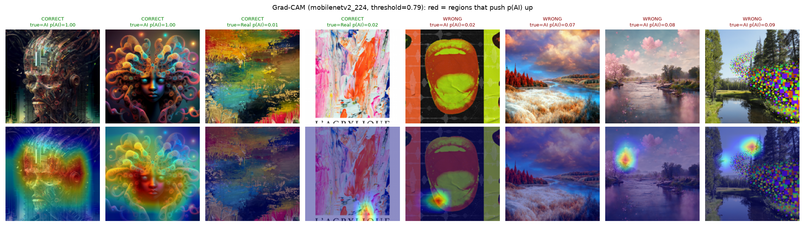
For confidently correct AI images the heat map covers the whole intricate subject (face, ornate details) – the model keys on dense, highly detailed texture typical of generators. For correct real paintings the map is nearly empty: absence of that texture is what makes them "real". For the missed AI landscapes the activation is almost blank except small blobs (pink blossoms, the pixel-art patch): the model has not learned AI cues for photoreal scenes, matching the error analysis.
labs/mlflow_toy.py trains a tiny MLP on 10,000 MNIST images twice, with learning rates 1e-3 and 1e-2, logging
parameters, per-epoch metrics (through a small Keras callback), a loss-curve plot and the saved model to a local store
(sqlite:///mlflow.db). Results: lr 1e-3 → test accuracy 0.903; lr 1e-2 → 0.911. Opened with
mlflow ui --backend-store-uri sqlite:///mlflow.db.
http://127.0.0.1:5000: the two runs in the
toy-mnist experiment; one run page (params, metrics, loss_curve.png, model artifact); the Compare
view of both runs with the val_loss chart.| Term | My definition |
|---|---|
| Experiment | A named folder that groups all runs aimed at the same problem (here visionguard, toy-mnist), so they can be compared side by side. |
| Run | One execution of training code: everything it was given and produced is recorded under one run ID. |
| Parameter | An input setting fixed before training (learning rate, image size, backbone); logged once, never changes during the run. |
| Metric | A number measured from the run, possibly many times (val_loss per epoch, final test AUC); MLflow keeps the history so curves can be drawn. |
| Artifact | Any file the run produced and stored with it: plots, CSVs, the split lists, the package list, the trained model. |
| Tag | A free-form label attached to a run for context and filtering (git commit, data version, seed, tracking mode), not used by the training itself. |
The DagsHub project Umer529/23L-0871_A2_Ops is connected to the GitHub repository (it mirrors every push). Its MLflow
tracking address is https://dagshub.com/Umer529/23L-0871_A2_Ops.mlflow. The address, my username and an access token
are given to the code only through the environment variables MLFLOW_TRACKING_URI,
MLFLOW_TRACKING_USERNAME and MLFLOW_TRACKING_PASSWORD, loaded from .env with
python-dotenv; nothing is written in code. .env is listed in .gitignore (Figure 1.5 shows
git check-ignore matching it) and has never been committed; .env.example documents the keys with
placeholder values. The toy runs were repeated against DagsHub (python labs/mlflow_toy.py --remote).
toy-mnist experiment on DagsHub with runs mlp_lr_0.001 and mlp_lr_0.01; terminal
git check-ignore -v .env / git status showing .env is not tracked.src/tracking.py wraps src/train.py. Every run, in both modes, gets these tags: git_commit
(full SHA from git rev-parse HEAD), git_dirty, dvc_data_version (the MD5 from
data/raw.dvc), seed, tracking_mode and model_family, plus the final test metrics.
--tracking manual): I log the 13 hyperparameters I chose; a custom MlflowEpochLogger
Keras callback logs train and validation loss/accuracy/AUC/precision/recall and the current learning rate every epoch (with the
absolute epoch number, so stage 2 continues stage 1's curve); afterwards I log best-validation and test metrics and all artifacts.--tracking autolog, baseline CNN run E7): mlflow.tensorflow.autolog() patches
model.fit.| Manual (E4) | Autolog (E7) | |
|---|---|---|
| Parameters | 13 – exactly my experiment knobs (backbone, img_size, ft_lr, unfreeze, no_aug, …) | 31 – every fit/optimizer/callback argument (opt_beta_1, opt_epsilon, monitor, patience, …) but not my own knobs like image size, augmentation or backbone |
| Per-epoch metrics | Yes, including learning rate; continuous across both stages | Yes, automatically |
| Test metrics, threshold | Yes | Missed – autolog only sees fit(); I added them myself |
| Tags (git, DVC, seed) | Yes | Missed – added by my wrapper |
| Artifacts | Curves, confusion matrix, ROC, splits, pip freeze, tables, model | Model + model summary only |
| Effort / risk | More code; I can forget something | One line; noisy params; a second fit() in the same run (two-stage transfer) would clash, so I only use it for the single-stage CNN |
Figure 3.1 – What each approach recorded on DagsHub, queried with the MLflow client: tags, parameter and metric names, history length, artifacts, logged model, and the registry.
Every manual run attaches: reports/confusion_matrix.png, reports/roc_curve.png, the training curves,
splits/train.csv, val.csv, test.csv (the exact split lists), environment/pip_freeze.txt
(the package list) and the trained Keras model as an MLflow logged model (mlflow.keras.log_model), which the registry uses.
The artifact tree of E4 is listed in Figure 3.1.
run_experiments.ps1 produced 7 tracked runs; each differs from the run it is compared with in one change.
src/compare_runs.py pulls them back from the DagsHub MLflow server into one table and chart.
| Run | One change vs | Val loss | Val AUC | Val acc | Test AUC | Test F1 | Test prec. | Test recall | Real→AI |
|---|---|---|---|---|---|---|---|---|---|
| E1 MobileNetV2 baseline (last block, ft-lr 1e-5) | – | 0.491 | 0.839 | 0.740 | 0.835 | 0.712 | 0.922 | 0.580 | 6.1% |
| E2 fine-tune lr 1e-4 | E1: learning rate | 0.473 | 0.863 | 0.760 | 0.848 | 0.748 | 0.897 | 0.642 | 9.1% |
| E3 unfreeze last 50 layers | E2: frozen layers | 0.473 | 0.877 | 0.801 | 0.884 | 0.708 | 0.939 | 0.568 | 4.5% |
| E4 no augmentation | E3: augmentation | 0.410 | 0.903 | 0.829 | 0.881 | 0.771 | 0.915 | 0.667 | 7.6% |
| E5 image size 160 | E3: image size | 0.421 | 0.885 | 0.781 | 0.829 | 0.672 | 0.880 | 0.543 | 9.1% |
| E6 EfficientNetB0 | E3: backbone | 0.453 | 0.880 | 0.822 | 0.905 | 0.744 | 1.000 | 0.593 | 0.0% |
| E7 baseline CNN (autolog) | tracking approach | 0.599 | 0.727 | 0.651 | 0.699 | 0.426 | 0.852 | 0.284 | 6.1% |
Table 3.1 – All runs (reports/experiment_comparison.csv); 12 + 10 epochs per transfer run, thresholds chosen on validation as in 2.5.
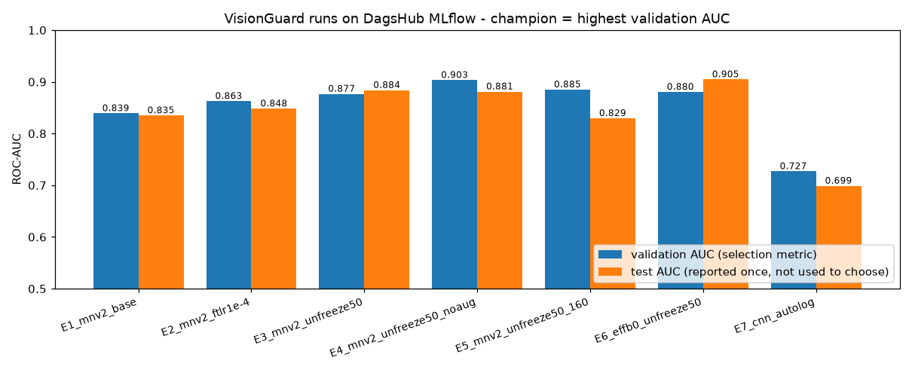
Choice and justification. The champion is E4. My selection metric is validation ROC-AUC (with validation loss as a check), because AUC measures ranking quality independent of the threshold, and the threshold is then tuned separately for the "don't accuse real photos" requirement. E4 has the best validation AUC (0.903), the lowest validation loss (0.410) and the best validation accuracy (0.829). On test it also has the best F1 (0.771) and recall (0.667) while keeping real-called-AI at 7.6%.
E6 (EfficientNetB0) has a higher test AUC (0.905) and zero false positives; choosing it because of that would mean using the test set to pick the model, which is exactly the validation-overfitting problem from 2.7 moved to the test set. Its test recall is also lower (0.593). Single-change lessons: a 10× larger fine-tune lr helped (E1→E2), unfreezing 50 layers helped (E2→E3), smaller images hurt (E3→E5, fine generator artefacts are lost when downscaling), and removing augmentation helped (E3→E4) – supporting the hypothesis that even mild flips/contrast changes disturb the subtle pixel statistics the model relies on.
src/register.py ranks the manual runs by best_val_auc, registers the top two as versions of the registered
model visionguard (v1 ← E5, v2 ← E4), and sets the alias champion on v2 (and challenger on v1).
A separate script, src/predict_by_alias.py, loads models:/visionguard@champion and classifies one test image.
Figure 3.3 – Loading the model by alias and classifying an unseen test image (first command); the second command is Task 4.1.
visionguard: versions 1 and 2, alias @champion on version 2.How the champion reaches the server. The serving app never calls DagsHub per request. predict_by_alias.py --export
downloads the champion once and writes models/champion.keras plus champion.json (version, run, threshold 0.67).
The Compose stack mounts that folder read-only; src/export_tflite.py converts the same file to
api/model/champion.tflite for the cloud API. Promoting a new champion = re-run these two scripts and redeploy.
app/inference.py holds LocalPredictor, created once in create_app() and shared by all
requests. On start-up it loads champion.keras, reads the metadata JSON next to it (model name, version, threshold), and
runs one warm-up prediction. predict(bytes) calls the exact decode_and_resize() used in training, runs the model
and returns label, confidence (probability of the announced class), p(AI), threshold, model name/version and latency.
Why loading per request is unacceptable. Loading took 7.2 s while one prediction takes about 0.2–0.3 s (Figure 3.3, second command): per-request loading would make every upload 25× slower, re-read ~10 MB from disk and rebuild the graph each time, multiply memory use under concurrent requests, and fail mid-traffic if the file is being replaced.
Why training and serving preprocessing must match. The model only learned what images look like after the training
pipeline (centre crop, antialiased resize, RGB, [0,255]). If serving stretched instead of cropping, used another resize filter or
another scaling, the inputs would come from a different distribution and accuracy would silently drop with no error. I enforce this
by having one function in src/preprocess.py imported by training, the app and the API, a test that fails if the API's copy
differs, and by putting model-specific scaling inside the model. Both known images are classified correctly with high confidence.
| Route | Purpose |
|---|---|
GET / | Upload page |
POST /predict | Validate → predict → write DB row → result page |
GET /history | Latest 100 predictions from the database |
GET /health | JSON: status, database, inference mode, model name/version, threshold (503 if degraded) |
Validation (app/validation.py), all done on bytes in memory: (1) no file → 400; (2) extension not
.jpg/.jpeg/.png → 415; (3) larger than MAX_UPLOAD_MB → Flask's MAX_CONTENT_LENGTH raises
413 before the body is read; (4) Pillow cannot decode it (even with an image extension) → 422; (5) a real image whose
true format is not JPEG/PNG (e.g. a GIF renamed .png) → 415. File names go through Werkzeug's secure_filename
(../../etc/passwd.png → etc_passwd.png) and are only used for display. The upload is never written
to disk: it is read into memory, hashed (SHA-256 is stored, not the image), and the result page shows an inline thumbnail encoded in
the response. Every error renders a friendly page through Flask error handlers instead of a stack trace.
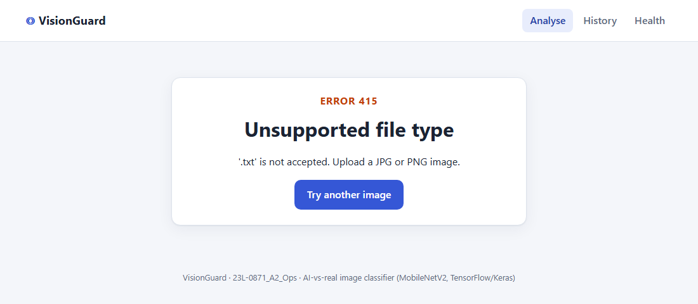
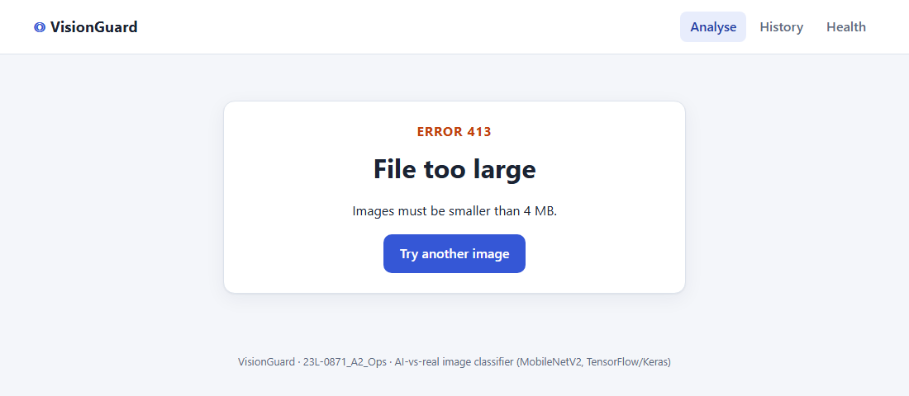
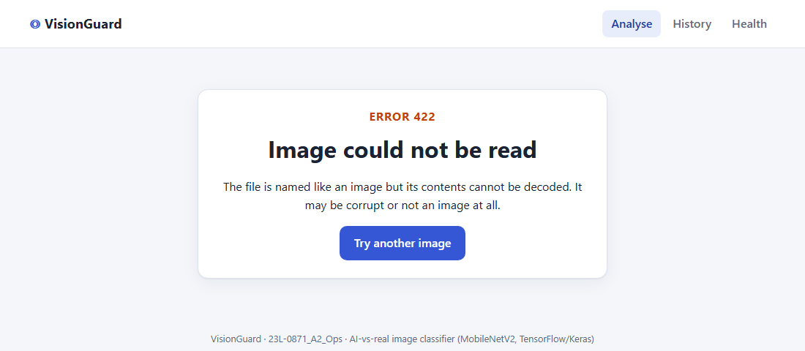
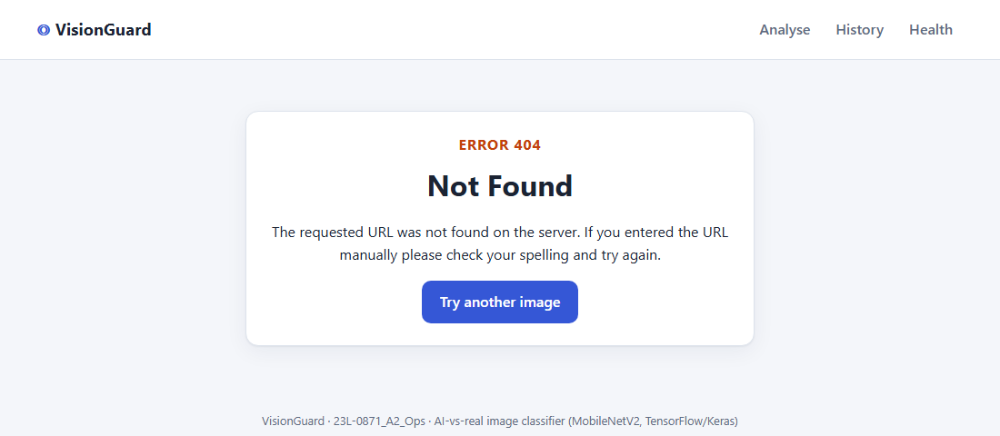
Jinja templates (base.html, index.html, result.html, history.html,
error.html) share one stylesheet. The navigation bar has Analyse, History and Health. The result page
shows the verdict (orange for AI, green for real), a confidence bar, p(AI), the threshold, the model name and version, the latency,
and an honest caveat with the champion's real test error rates. The layout is responsive (single column on phones).
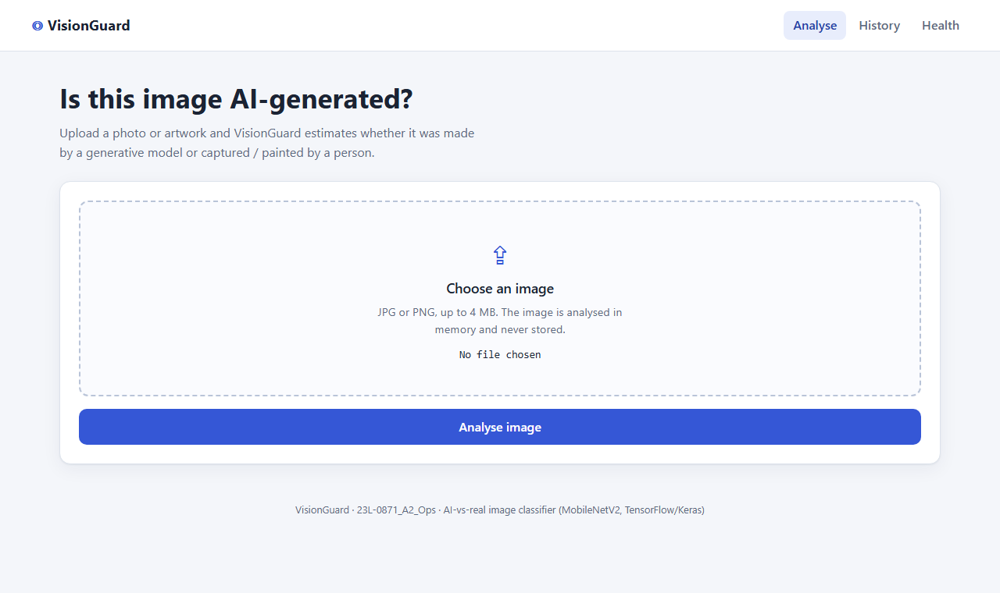
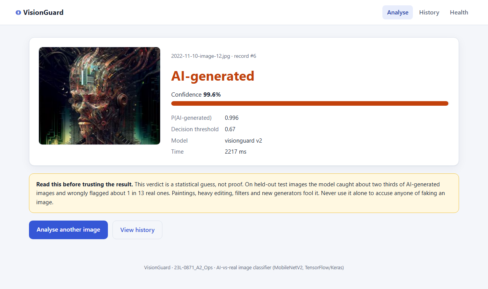
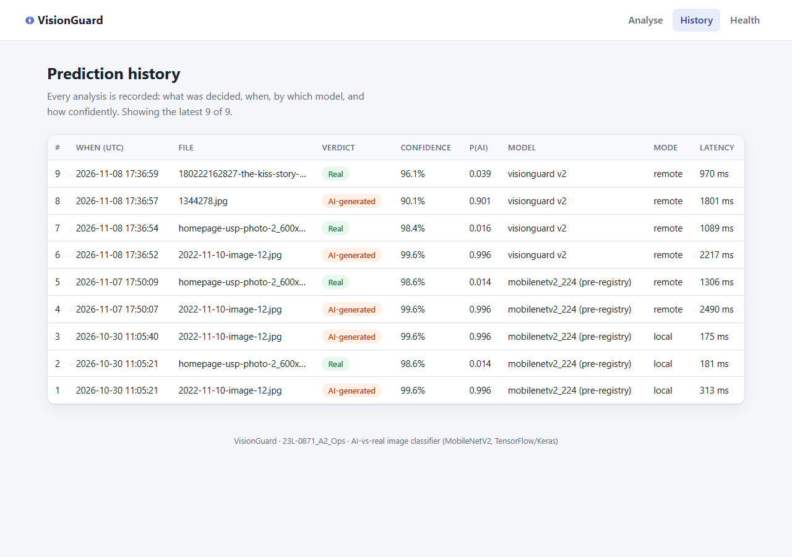
app/config.py reads every setting from environment variables: MODEL_PATH, THRESHOLD (empty =
use the champion's saved threshold), DATABASE_URL, INFERENCE_MODE, MODEL_API_URL, API_KEY,
MAX_UPLOAD_MB, PORT. The same image therefore runs locally, in Compose and against the cloud API without code
changes, and no secret is in the code or the image. The app is served by Waitress (a production WSGI server) with debug mode
off: Flask's debugger would let anyone who triggers an error execute Python on the server, tracebacks leak source code and
settings, and the auto-reloader would start two processes and load the model twice. The development server is single-threaded and not
meant for traffic; Waitress serves 4 threads.
Figure 4.9 – Health-check response (Compose stack in remote mode: database ok, model API ok, champion v2, threshold 0.67).
What. PostgreSQL 16 runs as the db service of the Compose stack. app/db.py (SQLAlchemy Core) creates
one table, predictions, and the /predict view inserts a row after every successful prediction; rejected
uploads are not recorded. The same code also works with SQLite, which the tests use.
| Column | Answers |
|---|---|
id, created_at (timestamp with time zone, UTC) | When |
label, p_ai, threshold | What was decided and the rule used |
confidence | How confidently |
model_name, model_version, inference_mode | By which model (registry version) and where it ran (local / remote API) |
filename (sanitised), image_sha256, latency_ms | Which input (by hash, without storing the image) and how fast |
Why it is permanent and queryable. The data lives in the named volume pgdata, so it survives container restarts,
rebuilds and docker compose down; rows logged before a rebuild were still present afterwards. The History page reads the
latest 100 rows; arbitrary questions can be answered with SQL, e.g.:
Figure 5.1 – Querying the trail directly inside the db container: every decision, when, by which model version, how confidently, and whether it ran locally or through the cloud API.
| Term | My definition |
|---|---|
| Image | A read-only, versioned template containing a filesystem (OS libraries, Python, packages, code) and the default command. |
| Container | A running (or stopped) instance of an image: an isolated process with its own writable layer, network and filesystem view. |
| Layer | The filesystem change produced by one Dockerfile instruction; layers stack, are shared between images and cached, so unchanged steps are not rebuilt. |
| Volume | Storage managed outside the container's writable layer, so data survives when the container is removed (e.g. the Postgres data). |
| Port mapping | -p host:container forwards a port on my machine into the container's isolated network so the service can be reached from outside. |
nginx):
docker run -d --name web1 -p 8080:80 -v %cd%\site:/usr/share/nginx/html nginx; browser at localhost:8080;
docker logs web1; docker exec -it web1 sh; docker ps -a / docker images;
docker rm -f web1 / docker rmi nginx.Order of instructions and the layer cache. (1) FROM python:3.12-slim; (2) environment variables
(PIP_NO_CACHE_DIR=1, unbuffered logs); (3) copy only app/requirements.txt and pip install;
(4) create the non-root user; (5) copy the source code last. Docker reuses a cached layer until an instruction or its input files
change, after which every later layer is rebuilt. Installing TensorFlow takes minutes, so it sits above the code: editing a template
or a Python file only rebuilds the small final layers, while the dependency layer is reused as long as requirements.txt is
unchanged.
useradd --uid 10001 appuser + USER appuser; a compromised app cannot modify the image or the mounted volume.HEALTHCHECK calls /health every 30 s with Python's urllib (no curl needed in the image)..dockerignore excludes .git, venv, data, models, reports, .env, MLflow stores → small build context, no secrets or data in the image.tensorflow-cpu==2.17.1 – the same TF version as training (so the saved model loads identically) without GPU/CUDA support, which a CPU server never uses; it is the main reason the image is 1.9 GB and not 5.9 GB (6.4). Keras is pinned to the training version (3.15.1).Figure 6.1 – The process inside the container runs as appuser (uid 10001), not root. Dockerfile: Dockerfile in the repository root.
docker-compose.yml defines two services. db: postgres:16-alpine, data in the named volume
pgdata, health check pg_isready every 5 s, and no ports: section, so it is reachable only
inside Compose's network. web: built from the Dockerfile, publishes 5000, and depends_on: db: condition: service_healthy,
so it starts only when Postgres accepts connections. The web app reaches the database at host db: Compose's internal DNS
resolves the service name. All passwords come from the untracked .env (Compose interpolates ${POSTGRES_PASSWORD}
and refuses to start if it is missing); .env.example lists every key with placeholders.
How the model file reaches the container: mounted, not built in. ./models is mounted read-only at
/app/models. Promoting a new champion only needs an export and a restart, not a 1.9 GB rebuild; the image stays
model-agnostic and smaller; and the model's provenance stays in the MLflow registry rather than in an image tag. The trade-off is that
the host must provide the file; the app fails fast with a clear log line if it is missing (see 6.5).
Figure 6.2 – Both services healthy; the database publishes nothing (5432/tcp without a host mapping) and a
connection from the host to port 5432 fails, while the web container resolves db on the internal network.
Figure 6.3 – Image sizes and largest layers before and after optimisation.
The largest layer is always the pip install layer (TensorFlow). The "before" image
(docker/Dockerfile.unoptimized) uses the full python:3.12 base (+696 MB of compilers and +202 MB of VCS tools),
the full tensorflow wheel and keeps pip's cache: 5.91 GB. The optimised image (slim base,
tensorflow-cpu, PIP_NO_CACHE_DIR=1, a .dockerignore) is 1.90 GB, 3.1× smaller.
TensorFlow itself remains most of the size; the next step would be serving with the LiteRT runtime (as the cloud API does, ≈11 MB),
which I did not do for the web app because Task 4.1 asks it to load the Keras model.
Lifecycle commands used: docker compose up -d --build (start), docker compose stop,
docker compose restart web, docker compose logs -f web, docker compose exec web sh and
docker compose exec db psql -U visionguard (a shell in each service), docker compose down (keeps the volume).
whoami in web, psql in db).Breaking it on purpose: wrong database password. I restarted only the web service with a wrong password
(POSTGRES_PASSWORD=wrong-password docker compose up -d --no-deps web; the database keeps its real password from its first
initialisation). The web container never became healthy. Diagnosis from the logs only:
Figure 6.4 – Failure log, diagnosis and fix.
Diagnosis. The log line password authentication failed for user "visionguard" comes from my retry loop in
db.py, which prints the first line of the driver error on every attempt: the database is reachable (no "could not
translate host name" or "connection refused"), so networking and readiness are fine and only the credential is wrong. Fix:
restart the web service with the value from .env (docker compose up -d web); the log shows
database ready and the container returns to healthy.
Toy part (files in labs/ci_toy/, pushed to a throwaway repository): a workflow on every push with a
strategy.matrix of Python 3.11 and 3.12 running pytest on a small test file. I changed an assertion to make it
fail (red run), then reverted it (green run).
Apply part (.github/workflows/ci.yml): on every push and pull request, job 1 installs app/requirements.txt
(pip cache enabled), runs flake8 and the pytest suite (19 tests: routes, the three rejection cases, filename sanitising,
database logging, preprocessing shape, model loading, API auth, and the check that the API's preprocessing copy is identical); job 2
(only if job 1 passes) builds the Docker image with Buildx and the GitHub Actions layer cache. The status badge is at the top of
README.md.
Where workflow secrets are stored. In GitHub → repository Settings → Secrets and variables → Actions, read
in a workflow as ${{ secrets.NAME }}. They must never be written in the workflow file because that file is committed: the
secret would be visible to anyone who can read or fork the repo and would stay in Git history forever even after deletion. Actions
secrets are encrypted at rest, not given to workflows triggered from forks, and masked in logs. (The current CI needs no secrets.)
Live API URL: https://23-l-0871-a2-ops.vercel.app · GET /health ·
POST /predict (header X-API-Key, form-data field image).
Research that shaped the design. A Vercel Python function is limited to a few hundred MB unzipped, has no persistent disk, a 4.5 MB request-body limit and per-request timeouts. TensorFlow (≈600 MB installed) does not fit, and SQLite would not persist. So:
ai-edge-litert, an 11 MB wheel). src/export_tflite.py checks Keras vs TFLite on 30 validation images: max difference in p(AI) 2.8×10-6.X-API-Key get 401 (constant-time comparison; if the key is not configured the API refuses everything). The key is an encrypted Vercel environment variable, never in the code. Uploads are capped at 4 MB to stay under Vercel's body limit.23-l-0871-a2-ops imported from the GitHub repository.api; Framework preset = Other (the first deploy from the repository root failed because the root is not the API).api/ contains index.py (Flask app exporting app), preprocess.py, requirements.txt (Flask, Pillow, NumPy, ai-edge-litert pinned), vercel.json (Python builder, route everything to index.py, include model/**) and model/champion.tflite + champion.json.python src/predict_by_alias.py <img> --export models/champion.keras, then python src/export_tflite.py.API_KEY (encrypted, Production + Preview).VERCEL_TOKEN in .env.python src/deploy_vercel.py uploads the six files through the Vercel REST API, creates a production deployment and waits for READY. Pushing to main also redeploys automatically through the GitHub integration.API_KEY (value hidden).Figure 7.1 – Calls to the deployed API from my machine: health, missing and wrong key (401), four images (two AI, two real), and an undecodable file (422).
In Postman: POST https://23-l-0871-a2-ops.vercel.app/predict, Headers: X-API-Key = the key from
.env; Body → form-data, key image (type File). A second request without the header shows the 401.
FileNotFoundError: /var/task/model/champion.json (500 FUNCTION_INVOCATION_FAILED). I diagnosed it from the Vercel runtime
logs, promoted the previous working deployment back to production, and committed api/model/ so Git-triggered builds include
the model.Setting INFERENCE_MODE=remote and MODEL_API_URL=https://23-l-0871-a2-ops.vercel.app in .env makes the
Flask app (running on localhost:5000 in Docker Compose) use RemotePredictor instead of loading TensorFlow. For
each upload it validates the file exactly as before, sends the bytes to /predict with the X-API-Key header
over one reused HTTPS session, and stores the API's answer – label, confidence, p(AI), threshold, model name and registry version –
in PostgreSQL with inference_mode = remote and the round-trip latency. /health also checks the API.

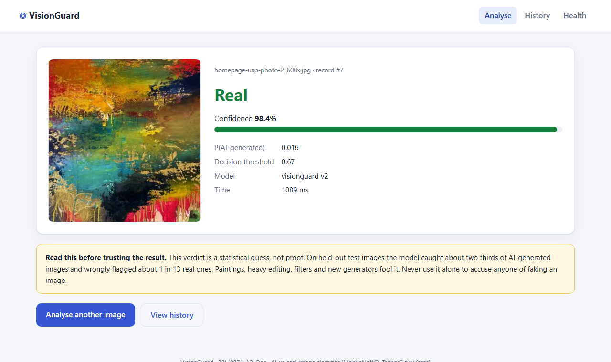
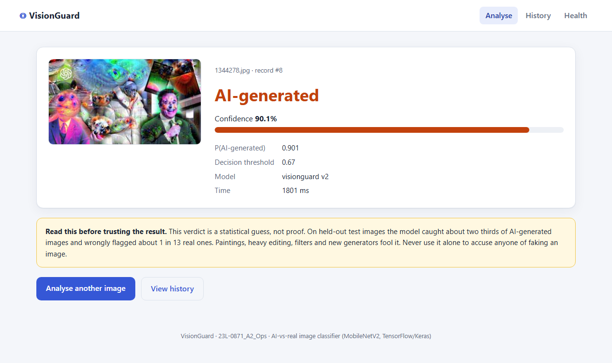
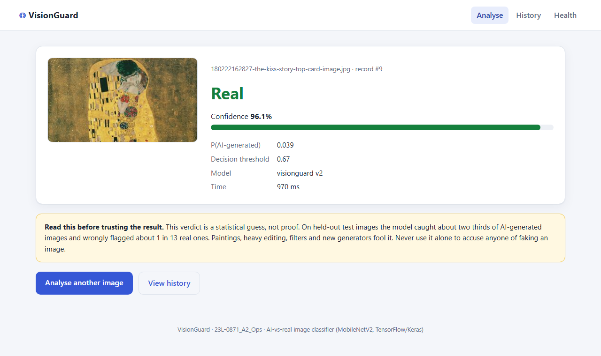

Latency is about 1.5–3 s per request in remote mode (network round trip plus occasional serverless cold starts) against about 0.2 s in local mode; inference itself on Vercel takes 15–120 ms. Remote mode keeps the web container free of TensorFlow and lets the model be updated independently of the web app.
| Problem | How I found it | Fix |
|---|---|---|
Metrics passed positionally to compile() → "loss_weights must match" | Smoke test (1 epoch) before long runs | Keyword arguments; fresh metric objects per compile |
| Stage-2 checkpoint could overwrite a better stage-1 model | Checkpoint log said "improved from None" in stage 2 | initial_value_threshold = stage-1 best |
| CPU-only training is slow (tuner: hours) | Timing of first runs | RAM cache after decoding, capped epochs, light backbone |
| TensorFlow cannot run on Vercel | Function size limits | TFLite + LiteRT; Pillow preprocessing shared everywhere |
A shell edit turned \v into a control character in the run script | First batch run exited immediately | Rewrote the lines with Python, checked for control characters |
| PowerShell 5.1 treated TensorFlow's stderr as fatal | Runner log | $ErrorActionPreference = "Continue", failures caught via exit code |
| Git-triggered Vercel build without the model → 500 | Vercel runtime logs | Rolled back, committed api/model/ |
| Model only ~half recall on AI images at a strict threshold | Test metrics, error analysis | Accepted as a product decision and stated in the caveat; more diverse AI landscapes/paintings would help |
| Path | Task |
|---|---|
src/audit.py, src/eda.py, src/split.py, data/raw.dvc | 1 |
src/preprocess.py, src/data.py, src/models.py, src/train.py, src/evaluate.py, src/gradcam.py, src/tune.py, labs/keras_tuner_toy.py | 2 |
labs/mlflow_toy.py, src/tracking.py, run_experiments.ps1, src/compare_runs.py, src/register.py, src/predict_by_alias.py | 3 |
app/ (main, config, inference, validation, db, templates, static), app/predict_cli.py | 4, 5 |
Dockerfile, .dockerignore, docker-compose.yml, .env.example, docker/Dockerfile.unoptimized, .github/workflows/ci.yml, labs/ci_toy/, tests/ | 6 |
api/, src/export_tflite.py, src/deploy_vercel.py | 7, 8 |
reports/ (all figures, per-run folders, CSVs), docs/report/ (this report and its evidence) | all |